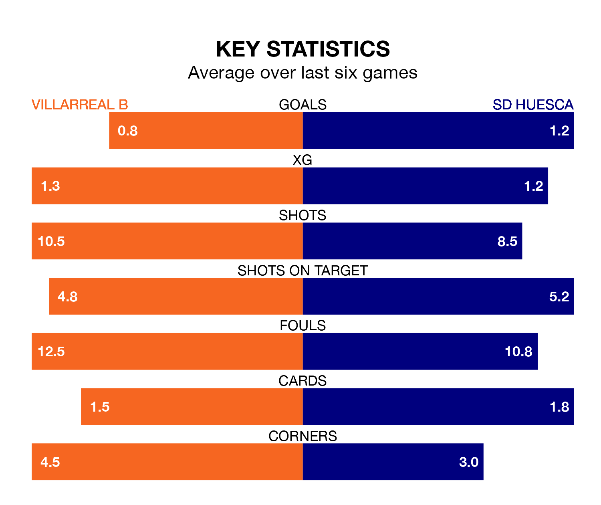

SD Huesca travel to Villarreal B on Sunday in the Segunda División.
The visitors come into the game on the back of a defeat in their last match, having lost to SD Eibar 3-2 at home, with goals from Kento Hashimoto and Hugo Claudio Vallejo Avilés.
Villarreal B also lost their last match, 2-1 against RCD Espanyol, with their goal scored by Álex Forés Mendoza.
In Forés Mendoza, Villarreal B have one of the league's sharpest shooters so far this season. He has notched 10 goals in 23 appearances, to sit second in the scoring charts.
His goal rate of one every 154 minutes is much quicker than that of Samuel Obeng Gyabaa, Huesca's top scorer with a goal every 382 minutes, and a total of four goals in 21 games.
The away side are 19th in the table after 23 games, of which they have won five and drawn eight, earning 23 points.
The hosts are two places ahead of Huesca in 17th, with six wins and six draws putting them on 24 points.
With 18 goals in 23 games so far this season, Huesca are the league's lowest scorers with 0.8 goals per game. But they are conceding fewer than average too, letting in 21 goals at a rate of 0.9 per game.
Villarreal B are also below average scorers, with 1.1 goals per game, compared to a league average of 1.2. They have conceded 1.6 goals per game.
Villarreal B are in mixed form in the Segunda División, with two wins and a draw from their last six games.
And also with two wins and a draw over that period, the visitors' form is identical – they have both taken seven points from 18.
In the last three years, Villarreal B and Huesca have played each other on three occasions. Huesca won one of them and they drew the other.
Their last meeting was on September 16, when they played out a 2-2 draw.
Updated: 08:51 (UTC), 25/01/24